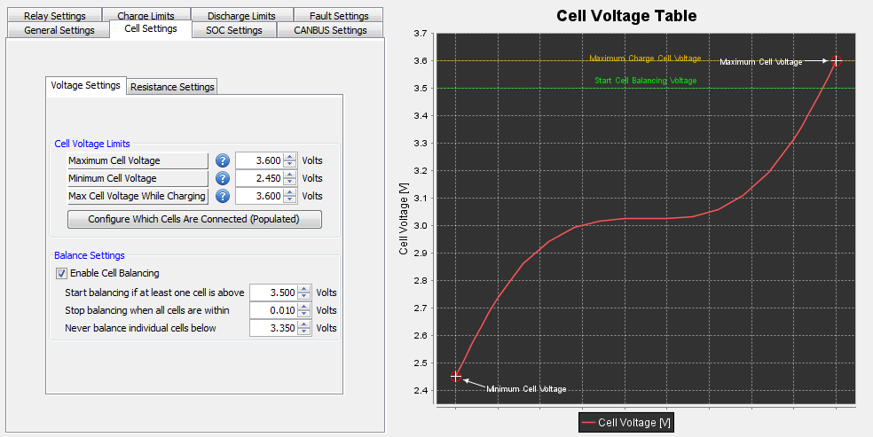

These settings deal with options specific to the individual battery cells and include parameters such as maximum and minimum cell voltages, target charging voltages and balancing operation.
The BMS will use the provided maximum / minimum cell and pack voltage values to adjust the calculated current limits in order to protect the battery pack. The BMS provides the ability to specify a different maximum pack / cell voltage while charging (ie: when CHARGE Power is energized to +12v) as opposed to in READY mode (ie: when only READY Power is energized).
NOTE: Make sure that the maximum and minimum voltage settings provided are equal to or less than the absolute maximum and minimum voltages for the battery.
NOTE: For details on the the various different Cell Balancing parameters and a brief description of how the balancing circuit in the BMS works, please see How Cell Balancing Works.
Associated Windows:
| < Low Voltage Powerdown | Resistance Settings > |